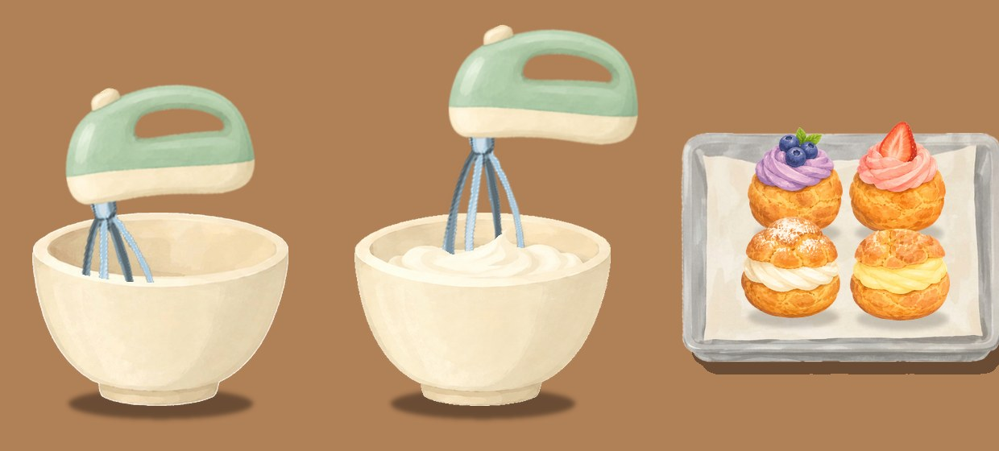
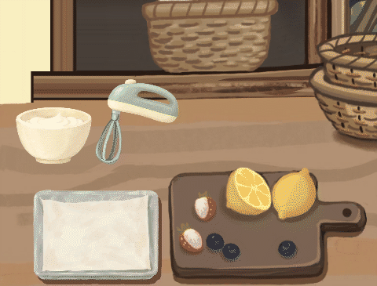
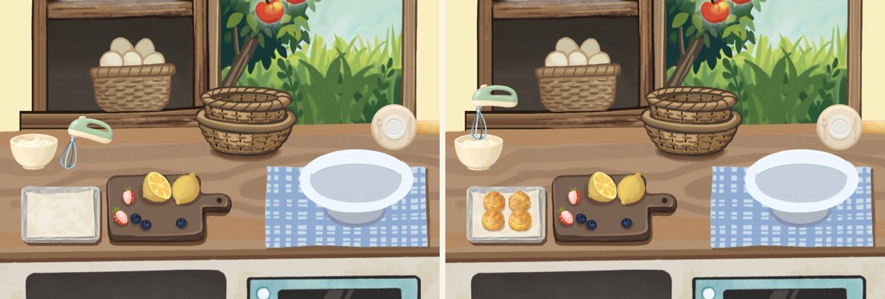

Food Truck Cafe
21 November. 2026.11.20 is live on the App Store; test build 2026.11.21 (0) is in TestFlight.
1Next
You
Test build 2026.11.21 (0) is in TestFlight with everything of today. Visuals is recaptured from it.
New in Current: the kitchen with your changes (sparkles for a finished dessert, as you picked), ten more mixing sounds.
Players today are in Analysis, with three ad choices to tick.
Still open: the tray on the counter (Current), the chapter 2 ideas (Q&A).
Me
Seen your ticks: chapter 2's first day, the hand pointer and the dots approved; the US player is a real player.
Tomorrow (22 Nov): Apple's numbers for 21 Nov (downloads, any Remove Ads sale).
2Q&A
Chapter 2 is much harder: ways to tune it (21 Nov)
- The data agrees. The player from Japan got mostly 3 stars in chapter 1; in chapter 2 they got 0 stars on day 13 and needed 2 to 5 tries on each of days 15 to 19. All 11 of their restarts were in chapter 2. Your own test today: one star on day 13 and on day 14. (Today's US player got 3 stars on both, so it can be done, but not by most.)
- Why: customers come at the same pace as chapter 1, but an ice cream is up to four taps, and the scoops and waffle bowls run out fast (4 scoops a well), so the kitchen trips pile up.
Ideas (tick any; my pick is 1, 2 and 3: make the ice cream lighter, leave the customers alone):
What are "Header" and "Search Results" on the release page? They are empty for our game.
- They are new, optional slots from Apple ("creative assets", shown from iOS 27): a picture or short looping video at the very top of our store page (Header), and a picture shown beside the game in search (Search Results).
- Empty is fine: the page looks as it does now, and search keeps showing our video and screenshots. Nothing is missing from the release.
- They are a chance to look better: one clear picture of the truck and the table, no prices, readable small. Apple gives templates with safe areas. They go through review like screenshots.
The sale price of each item
- Chapter 1: coffee $10, bread $15, apple $20, juice $20, cookies $30, strawberry cake $35 a slice, choux $35.
- Chapter 2: coconut $30, ice cream $15 per scoop (a three-scoop glass is $45).
- Plus a tip: price × seconds left on the order × 10 % (some customers tip more). A $30 order served with 6 seconds left pays $18 in tips.
- A replayed day pays only part of this (unchanged).
The time for each item after the kitchen redesign (21 Nov)
- Bread: 5 s in the oven.
- Cookies: 3 s in the oven.
- Choux: about 9 s from the oven tap to the table: oven 3 s, mixer 2.5 s, fruit board 2 s, shown finished 0.9 s, flight 0.6 s. No taps after the oven.
- Strawberry cake: the same, about 9 s.
- Choux and cake share the mixer and the board: if both are cooking, the second waits its turn (up to 2.5 s more).
- Apples and coconuts: back 8 s after the last one is picked.
- Ice cream blender: 3 s with four flavours, 1.8 s with two.
- Waffle machine: about 2.4 s.
- Coffee bags, juice: at once.
- With the Kitchen upgrade (15 stars) all of it is a quarter shorter: bread 3.8 s, cookies 2.3 s, choux and cake about 7 s.
3Current
Made 21 November. The tray on the counter is in test build 2026.11.21 (0); your new pictures and the animations are not in a build yet.
Kitchen: your pictures, the whisk in the cream, the mixer resting in its empty bowl, the served choux on the tray.


- Whisk in the cream: the whisk now goes half way into the cream; its lower part is hidden by the cream and the bowl's front wall, and it turns in there.
- At rest: the bowl is empty (Gemini painted it from our bowl) and the mixer sits in it, the whisk inside, the whole mixer within the bowl's edges (it overhung the left edge before; now it leans only a little and stands over the middle). The cream appears when it runs.
- Bowl shadow: like the basket's on the kitchen table: the same flat brown oval under the foot, measured on the basket.
- Finished tray: the four choux are the served pictures (the same as on the table's platter), on your tray, at the places of the old ones.
- Your pictures (tray, cake plate, mixer body) are used as painted; the later tray and cake stages are built on them.
- Finished choux and cake: no more flight; your pick 1, sparkles: a burst of gold sparkles, a little pop, then the dessert fades and goes to the table.
- Yellow "next step" glow: off on the mixer and the board.
- Cutting sound: your pick 2 is in. The other cutting and the old mixing samples are deleted.
- The mixer keeps to the counter's left end; the tray takes the front left.
Mixing sound, round 2: ten more. From Pixabay, each cut to 2.5 s, same loudness. More hand-mixer and whisking sounds this time; the ones you do not pick are deleted.
The baking tray lies fully on the counter top.

- The tray's footprint is now its whole body, and all of it must be on the counter's top. Before, only its lower edge had to be, so its top could stand past the counter's back edge.
- The same holds while arranging: a place where part of the tray is off the counter turns it red.
- With the board, the cake and the mixer on the counter, the free place for it is the front left.
4MVP
Next release: the kitchen remodel and the small fixes. Everything changed since release 2026.11.20:
- Kitchen flow: choux and cake are made in steps. The oven bakes them onto the baking tray or the cake plate in the kitchen, the mixer adds the cream, the fruit board adds the fruit, then they fly to the table. The kitchen does every step by itself, with no pause.
- New kitchen pieces: the baking tray (four choux, two by two, four stages, with a shadow), the cake plate's stages (empty, sponge, cream, finished), the lean handheld mixer with its bowl and the kitchen's whisk as its blade (at rest and running). All can be arranged; the tray starts on the kitchen table and always lies fully on its top.
- Kitchen times: bread bakes 5 s; choux, cake and cookies 3 s. The ice cream blender runs 3 s (1.8 s with two flavours). Pausing the game stops the kitchen too.
- Chapter 2 opens after day 9 of chapter 1 (the player chooses when to go). On the map day 9 is a big glowing star with a dotted path to the arrow; finishing it gives a star and the truck drives to chapter 2.
- Chapter 2, first day: every ice cream is a waffle bowl with one or two scoops; normal orders from the second day.
- Chapter 2 gift: a fourth patience flower for every chapter 2 customer; in the tutorial a reward card shows it and it flies to the first customer.
- Map: today's day card opens by itself.
- Customers: they think for 2 s (three dots in the middle of the bubble) before the order shows.
- Tutorial: the pointer is a hand cookie with a gold glaze glow.
- Shop: NEW on a tab that holds something new; locked items stay visible with a padlock (cookies and coconut until chapter 2, the star Yoga until she is hired); two new locked star cards, Chef (20) and Dining table (25); cards aligned; the extra cup reads "One more plate for brewed coffee."
- Look: a taller hen on the table; the tutorial's "Ready to go?" card on paper with cookie buttons.
Not in yet: the chapter 2 tuning (your picks); the cutting animation (the board hops for now); a sound for the day 9 scene.
5Backlog
Nothing open.
6Analysis
Players today, 21 November (our time, read at 16:45).
- 6 new players (Germany 3, US 2, Bulgaria 1): opened 6, started the tutorial 5, finished it 3, finished day 1: 2, none on day 2 yet. One of them is on an old version (26.11.13) and stopped at step 3; another only opened the game.
- Day 1: 3 of the 4 first tries today got 2 stars, one got 3. Two new players closed the game within a minute of finishing day 1, at the moment the first between-days ad plays.
- The US player came back at 14:40 and played days 15 to 22 in half an hour, 3 stars on every day (day 18 restarted once). They bought candies 7 times and 8 stars for coins (999 coins each); now on day 22 of 28.
- Ads for that player: this time every day end showed one: 8 ads, 1 watched to the end, 7 skipped. So their phone does not block ads; my earlier guess was wrong. In their first visit the game asked Unity for no ad at all. Most likely Unity Ads failed to start when the game was first opened, and the game does not try again until it is opened again. That would cost ads for any player whose first start fails.
- Came back after days away: two earlier players (Philippines from 16 Nov, US from 13 Nov) started a new game: one finished day 1 (2 stars), one left during day 1.
- Unity Ads today (UTC day 21 Nov): 53 requests, 13 shown, $0.10. 9 of the 13 were in the last two hours, most of them the US player.
- Downloads (Apple, first time), 14 to 20 Nov: 69. Today's come tomorrow.
7Marketing
Nothing open.